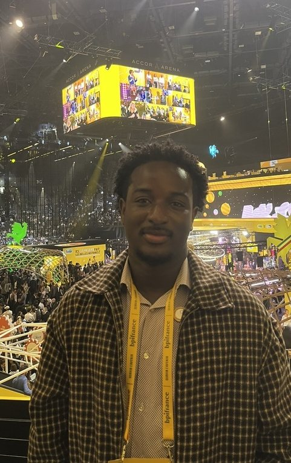

Corporate Finance · Financial Modelling · Data & Technology
J’analyse les enjeux financiers. Je construis les outils pour y répondre.
Mon parcours associe une formation technique, une expérience en transformation et analyse métier, et une spécialisation en finance d’entreprise. J’explore les marchés financiers, la valorisation et la modélisation quantitative à travers des projets concrets et des analyses appliquées.
En bref
Expérience
2 ans en Business Analysis chez Willis Towers Watson : transformation et coordination internationale.
Voir l’expérienceFormation
SKEMA Business School, Corporate Financial Management & Quantitative Finance.
Voir la formationProjets
Modélisation financière, valorisation, backtesting de stratégies et développement d’outils.
Voir les projetsSelected Work
Des modèles construits, testés et documentés.
Méthode
De l’analyse à l’exécution.
Comprendre
Analyser les enjeux métiers, financiers ou opérationnels avant de proposer une solution.
Valorisation de LVMHÉtudier chacun des cinq métiers du groupe avant de les valoriser séparément.Modéliser
Traduire le problème en modèle : hypothèses explicites, méthode reproductible, tests de sensibilité.
Backtests systématiquesCinq stratégies codées en Python et évaluées sur la même grille de critères.Livrer
Transformer l’analyse en livrable utilisable : outil, plateforme ou tableau de bord.
Déploiement chez Willis Towers WatsonLe pilotage du déploiement d’une plateforme logicielle de 2 M$.Financial Intelligence
Ma veille des marchés
Les dernières publications de la BCE et de l’AMF, collectées automatiquement depuis leurs flux officiels. Chaque titre renvoie à la source.
Écrits & analyses
Taux, politique monétaire et finance d’entreprise.
Événements & engagements
En dehors des cours.

Échangeons autour de la finance, des données et de la transformation.
Une question sur un projet, une analyse ou mon parcours : écrivez-moi directement.
Projets
Réalisations
Valorisations, modèles de marché et outils. Chaque fiche suit la même trame : contexte, problème, approche, réalisation, résultats et enseignements. Les figures sont calculées pour illustrer la méthode, elles ne présentent pas de résultats.
Écrits et analyses
Ce que je lis dans les marchés
Taux, politique monétaire, valorisation et financement des entreprises. Des analyses publiées sur LinkedIn, des notes de fond et mes travaux de recherche.
Parcours
Fondation technique, analyse métier, finance d’entreprise
Une formation en informatique, deux ans d’analyse métier dans un groupe international, des missions de gestion de projet, puis la finance d’entreprise et la modélisation à SKEMA.
- Fondation techniqueInformatique et télécoms
- Analyse métierBusiness analysis, données, risques
- Gestion de projetsPilotage, reporting, coordination
- Finance et modélisationValorisation, marchés, Python
Engagements
En dehors des cours
Compétences appliquées
Ce que je pratique, ce que j’approfondis
Certifications
Certifications
| Déc. 2026 | Certification AMF | Examen planifié |
| Mai 2027 | CFA Level I | En préparation |
| Juin 2026 | Bloomberg Market Concepts | Obtenue |
| DataCamp | Python | Obtenue |
Langues
Langues
| Français | Langue maternelle |
| Anglais | Courant |
| Chinois | A1 |
Me contacter
Échangeons autour de la finance, des données et de la transformation
Pour parler d’un projet, d’une analyse ou de mon parcours, le plus simple est de m’écrire.
christiansodara00@gmail.com
Christian Sodara
Basé à Paris.